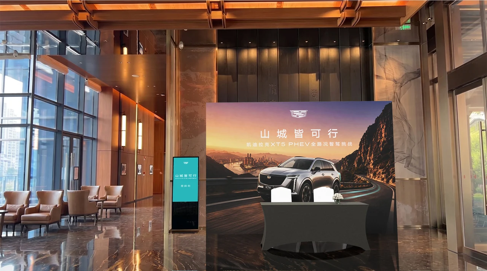
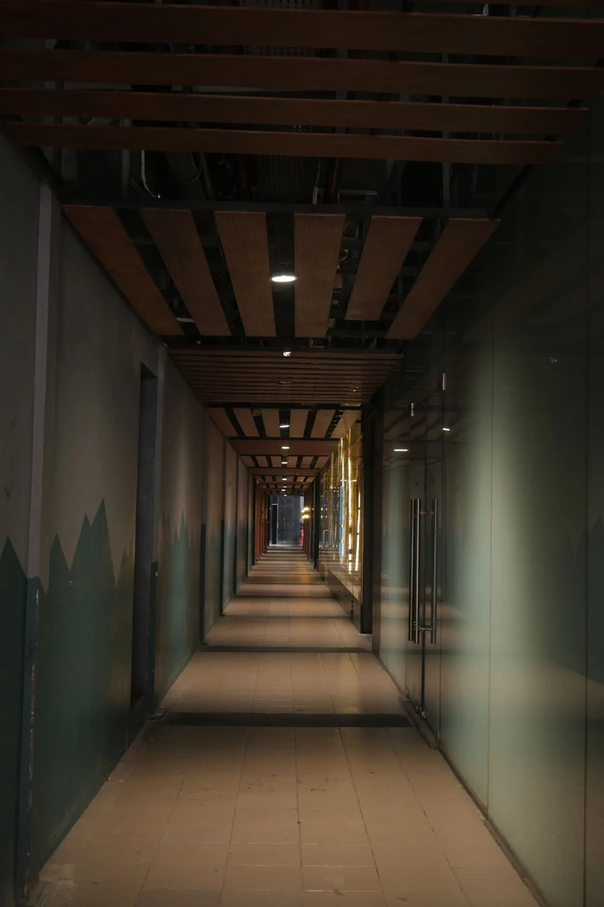
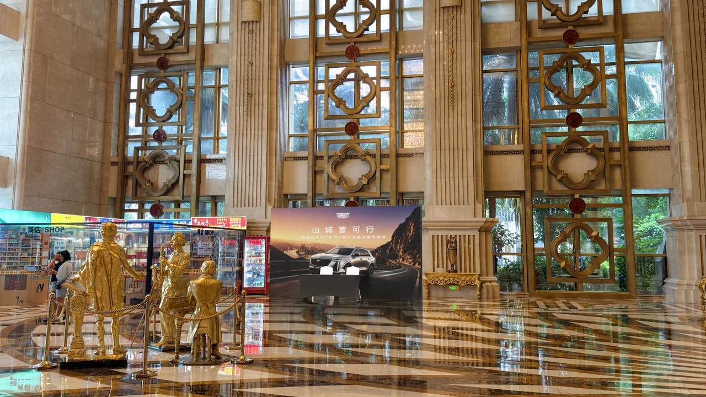
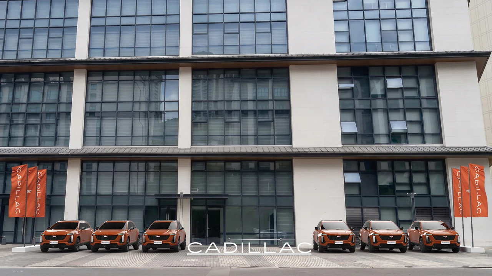
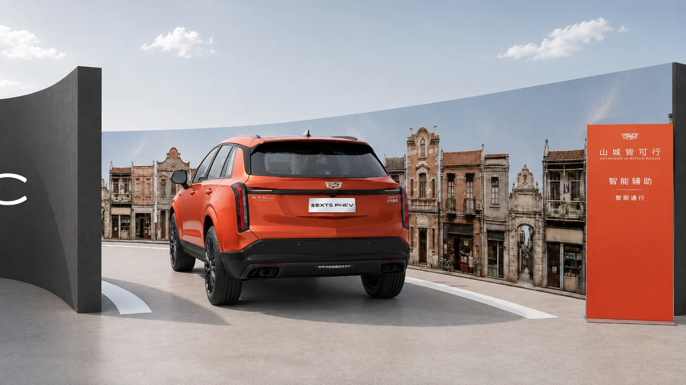

XT5 PHEV重庆试驾

酒店展车主视觉
方案从酒店里的展车和导视开始，延伸到建筑前集结与户外试驾区。车队、立牌和地面标线分别交代了室内展示、集结和试驾的空间。
酒店内的展示与导视
暖色吊顶连续带出走廊纵深，青色立牌立在视线前方。进入大厅后，车身落到深色台面上，壁上的大画幅承接走廊尽端的视线。
走廊里的识别点
暖光下的展车背板承接酒店入口。走廊立牌与室外车队旁的旗帜同用蓝绿色，把室内导视和外部场地串起来。

酒店走廊布置

照片中等距的灯点与连续顶线共同指向通道深处。原作也用屋顶纵线铺出进深，把较亮的青色字留在视线经过的位置。
Greenmax Techphotograph · Pexels 许可
酒店展示区远景
建筑前的集结
建筑立面保留完整背景，车辆顺外场边缘排开。对照远景和近侧视角，可看清车道让出的进深。

建筑前车队


临水单车陈列
试驾区展示
室外试驾图里，两块橙色立牌把看车位置从路面标线中分出来。一张正面同时呈现两台车，另一张从车尾侧把城市背景和车身叠在一起。
试驾区正面

街景画面前的展车
完整图集
9 张 · 点图放大